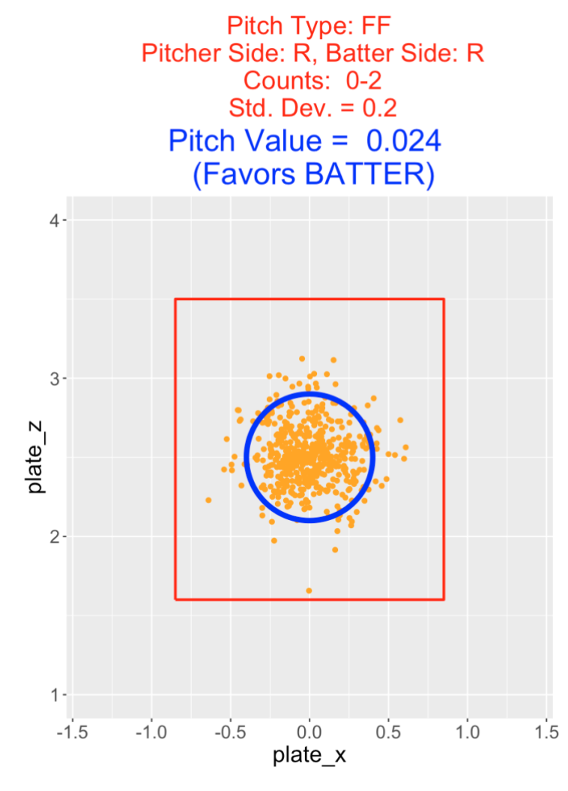

Pitching
1 Introduction
This article contains a sample of posts from the “Exploring Baseball Data with R” blog regarding pitching.
Section 2 describes the use of the pitchRx package in visualizing the pitch locations of Cliff Lee. A similar exploration is done in Section 2 for the pitches for Cole Hamels’ no hitter during the 2015 season.
Section 4 focuses on the idea of discrimination – what pitching metric is most helpful in discriminating between pitchers of different abilites? Section 5 looks at pitcher selection from the perspective of entropy. This measure is helpful in understanding which pitchers are good or bad in mixing up their pitch selection.
Roy Halladay died young and Section 6 is a statistical tribute to Halladay’s pitching career. He was considered to be a master of short games, and this motivates an exploration of the durations of games when Halladay was a starter.
Sections 7 and 8 provide a historical perspective on how pitchers are used in a game. We look at the number of pitchers used during a game in Section 7 and Section 8 looks at the mysterious 100-pitch limit for starting pitchers. Section 9 gives a historical look at pitchers who have thrown k perfect innings which we refer to as “Perfect-k” games.
From a pitch value perspective, Section 10 investigates the optimal pitch location – this optimal location will depend on the pitch type, the sides of the pitcher and the batter, and the ount. Section 11 concludes by illustrating the use of multinomial regression model to measure pitcher fatigue.
2 Visualizing Cliff Lee’s Pitches in the 2013 Season
Following up Carson’s post, it seems appropriate to give some simple illustrations of using the pitchRx package to visualize the locations of pitches. Since I’m a Phillies fan, I follow Cliff Lee and I’ll focus on looking at Cliff’s pitches in the 2013 season.
As explained by Carson, it saves a lot of time to initially download a large chunk of Gameday into a database, and then extract portions of the data from the database into R. Using the src_sqlite() function in the dplyr package and the scrape() function in the pitchRx package, I set up a database and download Gameday data for all games played in 2013. (This process takes 1-2 hours and the database takes about 600 MB in storage.)
library(dplyr)
my_db <- src_sqlite("pitchRx.2013", create = TRUE)
library(pitchRx)
scrape(start = "2013-01-01", end = "2013-12-01",
connect = my_db$con)Now that the database has all of the 2013 Gameday data, I use functions in the dplyr package to extract variables from the pitch and atbat tables in the database. The inner_join() function merges the pitch and atbat data, and the collect() function brings the data into R. Note that the filter argument in inner_join() limits the collection to Cliff Lee pitches.
library(dplyr)
my_db <- src_sqlite("pitchRx.2013")
locations <- select(tbl(my_db, "pitch"),
pitch_type, px, pz, des, num, gameday_link)
names <- select(tbl(my_db, "atbat"), pitcher_name, batter_name,
num, gameday_link, event, stand)
que <- inner_join(locations, filter(names,
pitcher_name == "Cliff Lee"),
by = c("num", "gameday_link"))
pitchfx <- collect(que) #submit query and bring data into RI only want pitch data for Lee in the 2013 regular season, so I create a gamedate variable and use the subset() function to focus on games of month numbered 4 or later.
pitchfx$gamedate <- substr(pitchfx$gameday_link, 5, 14 )
pitchfx <- subset(pitchfx,
as.numeric(substr(gamedate, 6, 7)) > 3)What types of pitches did Lee throw? We see below that Lee likes to throw a two-seam fastball (FT), but he also throws a good number of four-seam fastballs (FF), cutters (FC), change-ups (CH), and curve balls (CU).
table(pitchfx$pitch_type)
CH CU FC FF FT SL
523 256 666 671 1131 25To show the location of the pitches, it is helpful to overlay the strike zone in our graphs. Here are the locations of an average zone that Max used in our book and the locations are placed in a data frame called kZone
topKzone <- 3.5
botKzone <- 1.6
inKzone <- -0.95
outKzone <- 0.95
kZone <- data.frame(
x=c(inKzone, inKzone, outKzone, outKzone, inKzone),
y=c(botKzone, topKzone, topKzone, botKzone, botKzone)
)Here are several interesting graphs using ggplot2 . The first graph shows the horizontal (variable px ) and vertical (variable pz) locations by batter side.
library(ggplot2)
print(ggplot(pitchfx, aes(px, pz, color=stand)) + geom_point() +
geom_path(aes(x, y), data=kZone, lwd=2, col="red") +
ylim(0, 5) + facet_wrap(~ stand, ncol=1))Another graph shows the locations of all pitches where each panel corresponds to a different pitch type. We see that Lee tends to throw his off-speed pitches in the lower portion of the strike zone.
print(ggplot(pitchfx, aes(px, pz, color=pitch_type)) + geom_point() +
geom_path(aes(x, y), data=kZone, lwd=2, col="red") +
ylim(0, 5) + facet_wrap(~ pitch_type))This is only the beginning of our exploratory analysis of Lee’s pitches. Given the large number of pitches, scatterplots aren’t that informative. The strikeFX() function in the pitchRx package gives a variety of alternative graphical tools for visualizing this pitch location data.
All of the R code for this post can be found at this gist site.
3 Exploring Pitches in Cole Hamel’s No-Hitter
As I’m a Phillies fan, I was pretty excited about Cole Hamels’ no-hitter against the Cubs on Saturday. This provides a good excuse to demonstrate the ease of using Carson’s pitchRx package to explore the 129 pitches that Cole threw during this game.
Given that Cole had several rough outings in his recent starts, it is somewhat remarkable that he pitched so well on Saturday. What happened in this particular game? It seems that there are two important factors in a pitching performance – the choice of pitches and the locations where these pitches are thrown. So we’ll focus our exploration on the types of pitches and the locations.
We first scrape the data using the pitchRx package. The list dat contains all of the pitch data for the games played that day. I combine pitch data (including type and location) from the component pitch and bat data from the component atbat . The data frame data contains information for all 129 pitches Hamels threw in this game.
library(pitchRx)
library(dplyr)
dat <- scrape("2015-07-25", "2015-07-25")
locations <- select(dat$pitch,
pitch_type, px, pz, des, num, gameday_link)
names <- select(dat$atbat, pitcher_name, batter_name,
num, gameday_link, event, stand)
data <- inner_join(locations, filter(names,
pitcher_name == "Cole Hamels"),
by = c("num", "gameday_link"))3.0.1 What types of pitches did Cole throw in this game?
with(data, table(pitch_type))
### pitch_type
### CH CU FC FF FT
### 29 26 9 39 26We see that Cole threw 39 four-seam fastballs (FF), but he also threw 29 changeups (CH), 26 curveballs (CU), 26 two-seam fastballs (FT), and a few cutters (FC). It seems that Cole may have thrown a greater variation of pitch types than usual.
3.0.2 What were the outcomes of these pitches?
with(data, table(des, pitch_type))
### pitch_type
### des CH CU FC FF FT
### Ball 8 8 1 17 11
### Ball In Dirt 1 0 0 0 0
### Called Strike 5 7 1 5 6
### Foul 2 1 2 8 5
### Foul Tip 0 1 0 0 0
### In play, out(s) 1 5 2 3 3
### Swinging Strike 10 4 3 6 1
### Swinging Strike (Blocked) 2 0 0 0 0We see some interesting things from this table:
A good proportion of the swinging strikes were from changeups. Half of the called strikes were from changeups and curveballs.
3.0.3 What were the locations of these pitches?
Here is easy to use the strikeFX() function in the pitchRx package. We add the facet_wrap option so we get a different view of the pitch locations for each pitch type.
strikeFX(data, point.alpha=1, layer=facet_wrap(~pitch_type, ncol=3)) +
ggtitle("Locations of All Pitches")We see that most of Cole’s changeups were low and out of the zone and many of his four-seamers were high. Note that his curve balls were all around the strike zone – I’m surprised that Cole threw a no-hitter with so much high breaking pitches.
3.0.4 What were the locations of these pitches where there was a swinging strike?
Using the filter() function (from the dplyr package), we limit our exploration to pitches where the outcome (variable des ) included the text “Swing”.
strikeFX(filter(data, substr(des, 1, 5)=="Swing"), point.alpha=1,
layer=facet_wrap(~pitch_type, ncol=3))+
ggtitle("Locations of Swinging Strikes")It seemed that most of these swinging strikes were either low changeups or curveballs or high fastballs.
3.0.5 Cole’s strike zone?
Did Cole benefit with good umpire calls for strikes? We focus on the pitches which were a ball or a called strike. One attractive way of summarizing the locations of these pitches is to fit a generalized additive model to this data where the response is binary (either the pitch is called strike or ball) and the explanatory variables are the horizontal and vertical locations. Using the strikeFX() function again, we display the fit from this model – the smoothed values (that is the predicted probabilities of a strike) are displayed using a heat map where a lighter color corresponds to a higher probability of a strike.
library(mgcv)
noswing <- subset(data, des %in% c("Ball", "Called Strike"))
noswing$strike <- as.numeric(noswing$des %in% "Called Strike")
m2 <- bam(strike ~ s(px, pz),
data=noswing, family = binomial(link='logit'))
strikeFX(noswing, model=m2) +
ggtitle("Cole's Strike Zone")The light blue region where the probability of a strike is high closely matches the strike zone indicating that the umpires are making reasonable calls on Cole’s pitches. The only exception is Cole is getting some benefit in balls located low in the strike zone.
It would be interesting to use pitchFX data to explore how Hamels has changed as a pitcher over his MLB career. My understanding is that Cole relied primarily on a fastball and changeup in his early years, and now he is understanding the benefits of using a wider variety of pitches.
4 Discrimination of Pitching Measures
There is an interesting new paper by Franks et al on devising useful sports metrics. One good property of a sports metric mentioned in the paper is the notion of discrimination – does the metric reliably differentiate between players of different abilities?
As in Franks et al, one can define discrimination by means of a random effects model. We’ll describe this model in terms of pitching, although the concept can be generalized to other baseball measures and to sports besides baseball.
Suppose we look at all pitchers in the 2016 season who have pitched at 100 innings. For each pitcher and each inning, we record the number of walks and hits allowed. (The mean number of walks and hits allowed is the popular WHIP measure.)
Let \(y_{ij}\) denote the number of walks and hits allowed by the ith pitcher in the jth inning. We assume that \(y_{ij}\) is normally distributed with mean \(M_i\) and standard deviation \(\sigma\). (We can view \(M_i\) as the talent of the \(i\)th pitcher). If we have \(N\) pitchers, we assume that the talents \(M_1, ..., M_N\) come from a normal talent distribution with mean \(\mu\) and standard deviation \(\tau\).
We estimate this random effects model from the data – we get estimates at \(\sigma\) and \(\tau\). If we have a pitcher with \(n\) innings, then the discrimination \(D\) is defined to be
\[ D = \tau ^ 2 / (\tau ^ 2 + \sigma ^2 / n) \] where we plug in estimates for \(\tau\) and \(\sigma\). \(D\) represents the proportion of variance of the number of hits and walks per inning for these \(N\) pitchers that is explained by the variation between the talents of the pitchers.
A couple of comments about this measure of discrimination.
- As we let \(n\), the number of observed innings for pitcher, get really large, then \(D\) will approach 1 which means that the observed variability in WHIP between the pitchers is entirely explained by the differences in the pitchers’ talents.
- But in a season, \(n\) won’t be that large, and \(D\) will typically take on values between .3 and .8
- We described this measure for hits and walks in an inning, but we can count other events, and each event will have an associated measure of \(D\). Values of \(D\) close to 1 correspond to measures that really distinguish pitcher abilities. In contrast, values of \(D\) close to 0 provide little information about pitcher abilities.
I assumed that \(n\) = 150 (we have pitchers with 150 innings pitched), and counted different things: (1) the number of hits and walks, (2) the the number of strikeouts, (3) the number of hits, (4) the number of walks, (5) the number of groundouts, (6) the number of flyouts, (7) the number of forceouts, (8) the number of extra-base hits, (9) the number of sac flies, and (10) the number of double players. For each measure, I computed the value of \(D\), and the values are displayed below.
Some comments on this graph.
- Some of these high discrimination values make sense since well-know FIP (fielding independent pitching) measures like strikeouts and walks have known to have high discriminations. - Also one would expect measures like sac flies and double plays to have low discriminations since these events are really functions of the runners-on-base rather than the quality of the pitcher.
- WHIP (walks and hits) has a moderate value of discrimination among all of these outcomes.
- I am a bit surprised that the number of groundouts and the number of flyouts have high values of D. Also I am surprised that the number of home runs per inning has a low discrimination value – this means that much of the variability in home runs per inning is not attributed to differences in pitchers’ abilities to allow home runs.
Anyway, these calculations are based on a convenient normal-normal random effects model which could be improved. But I think the notion of discrimination is helpful – especially when one is trying to sort out a variety of measures that can be useful predictions of future performance. Certainly, a front-office person would be more confident in the talent of a pitcher with a high strikeout rate than with a pitcher with a high double-play rate.
5 Pitch Selection, Entropy, and Establishing the Fastball
There is an interesting article in Sports Illustrated this week on the increasing use of the curve ball in baseball. Of course, many pitchers throw high-speed fastballs in the mid-90’s, but this article emphasized the use of off-speed pitches. I thought it would be interesting to look generally at the variety of pitch selection – which pitchers are especially good or poor in mixing up their pitches?
5.1 Entropy
There is a useful concept from probability for understanding uncertainty in pitch outcomes. Suppose there are three possible outcomes in tomorrow’s weather – rain, sunny, or cloudy and we represent the chances of the three outcomes by the vector \((p_R, p_S, p_C)\). If any one of the probabilities is close to 1, say the vector is (0.9, 0.05, 0.05), we are pretty certain of the weather outcome. In contrast, if the vector is (1/3, 1/3, 1/3), tomorrow’s weather is very uncertain. A measure of uncertainty is the entropy \(E\) defined as the negative of the sum of probabilities and corresponding log probabilities:
\[ E = - p_R \, \log(p_R) - p_S \, log(p_S) - p_C \, log(p_C) \]
In our weather example, the entropy \(E\) for (0.9, 0.05, 0.05) is equal to E = 0.39, and the entropy for (1/3, 1/3, 1/3) is \(E\) =1.099. Larger uncertainty will result in larger values of the entropy \(E\).
5.2 Entropy for Pitch Selection
Each pitcher throws a variety of different pitch types and one can summarize his pitch selection by a vector \((p_1, p_2, p_3, ...)\) which gives the proportion of fastballs, sliders, cut fastballs, curveballs, changeups, etc. This data is tabulated in FanGraphs in the Pitch Type category for pitchers. I collected this data from FanGraphs for the ten seasons 2007-2016 for both qualifying starters and relievers. I used entropy to measure the uncertainty in a pitcher’s pitch selection. A pitcher who primarily throws one pitch would have low entropy and a pitcher who throws a lot of different types of pitches would have high entropy. I wanted to address several questions.
- Does the variety in pitch selection vary among starters and relievers, and how has the typical entropy among pitchers changed over the seasons?
- What pitchers currently have low and high values of entropy and is this related to the speed of his fastball? (One might think that a pitcher might compensate for a slow fastball speed by throwing a greater variety of pitches.)
To address the first question, I graphed the average entropy against season for both starters and relievers. I guess it is not surprising that starters tend to have more variety in pitch selection than relievers. I don’t see much trend across seasons. Perhaps relievers are showing less variety in pitch selection (on average) in recent seasons.

Here is a graph of the entropy against the fastball velocity for all the qualifying starters in 2016. I’ve labeled some interesting points that deviate from the general pattern (there is a negative association between entropy and fastball velocity).
We see …
- Dickey and Colon are interesting in that they both have slow fastball speed and low entropy (low variety in pitch selection). Dickey is not surprising (he throws primarily knuckleballs), but I am a bit surprised by Colon.
- Jared Weaver does appear to compensate for a slow fastball with a high variety of pitch selection.
- Fiers, Tanaka, Iwakuma, Shields, Samardzija all are high entropy pitchers; in contrast, Hendricks, Quintana, Happ, Nelson, and Sanchez are low entropy pitchers who likely rely on a small number of pitch types.
5.3 Establishing the Fastball
I am currently reading an interesting book Off Speed by Terry McDermott and he talks about the importance that the pitcher establish the fastball early in the game. That suggests that a pitcher’s pitch selection is a bit different in early innings – he tends to throw a higher percentage of fastballs.
This is easy to confirm using PitchFX data. For all the 2016 starters, I found the percentage of fastballs (I included four-seam, two-seam and cutters) for each pitcher for each inning. For each inning I computed the ratio
RATIO = (percentage of fastballs in the inning) / (overall percentage of fastballs)
In the following graph, I plot the ratio for all pitchers against the inning. This basically confirms the general belief of establishing the fastball early. Although the pattern varies among pitchers, on average it seems that pitchers throw 10% more fastballs in the first inning than average. The pitchers tend also to throw a higher fraction of fastballs in the 2nd inning. The variation between pitchers is interesting – Fernandez and Hendricks really like to establish the fastball in the 1st inning – Dickey (not unexpected) and Volquez actually use the fastball less than average in the 1st inning.
5.4 Closing Comments
Interestingly, this is not the first post about entropy and pitch selection – for example, I found an interesting post in Baseball Prospectus where entropy is explored by a regression analysis. I think that the issue of pitch selection is very interesting and other explorations are possible. For example, I am sure pitchers tend to use particular pitches in different count situations. For example, one pitcher might tend to throw a fastball on the first pitch and use his off-speed stuff when he is ahead in the count. This information would be very helpful for a hitter in guessing the type of the next pitch. So you may be seeing further explorations on the timing of pitch selection in future posts.
6 Tribute to Roy Halladay - Master of Short Games
6.1 Introduction
The baseball world was stunned last week with the news of Roy Halladay’s death at age 40. Being a Phillies fan, I was a quick admirer of Halladay’s work ethic and his great pitching skills when he joined the Phillies, as illustrated by his two no-hitters in the 2010 season. The first no-hitter was a perfect game against the Marlins and the second was in his first post-season start against the Reds. In Ian Hunter’s recent tribute to Halladay, he describes six “Halladays” – complete games that finished in under two hours.
Last week, I described the duration of the 2017 World Series games, getting some insight how games can be so long. Since Roy Halladay appeared to be a quick worker on the pitching mound, I was inspired by Hunter’s article to explore the durations of the games when Halladay was a starter.
6.2 Exploring Game Durations
Since Halladay started all but two games during the seasons 1999-2013, I looked first at the game durations (in minutes) for all games in these 15 seasons. On average, we see that the median game duration has slowly increased from 1999 to 2013. For a given season, the game durations are symmetric in the middle, but there are number of outliers at the high end (due to high scoring and extra-inning games).
6.3 An Aside: The Increase in Game Durations
Making this plot made me wonder how the median game duration has changed over, say, the last 50 seasons. I have shown the pattern below. There was a steady increase from the middle 70’s to 2000, then there was a drop until 2005, and there has been a steady increase until the current season. The average game duration in the 2015 season is about 30 minutes longer than the average duration in the last 1970’s.
6.4 Games Started and Not Started by Halladay
Getting back to the main issue, were games started by Halladay unusually short? To answer this, we draw boxplots of the game durations for games started and not-started by Halladay. We see several interesting things:
- In Roy’s early seasons (1999 to 2001), his game duration was about average.
- Starting with 2002, his games were getting shorter. The most interesting season was 2005 when the average in games he started was about 30-40 minutes shorter than games when he didn’t start.
- In later seasons (2006 and on), Roy was consistently shorter than average, but the advantage seemed to be smaller in his final seasons.
6.5 Quickest Starters
Did Halladay rank among the quickest pitchers in baseball? To answer this, for each season, I ranked the top-ten pitchers (the ones that started at least 19 games) with respect to the median duration of the games that they started. For the seasons 1999 through 2013, I constructed this top-ten list, and then I counted the number of occurrences on this top-10 list. The below graph shows the seven pitchers who appeared at least three times on the top-10 list. The king of short games during this period was Mark Buehrle (10 occurrences), followed by Greg Maddux (6 occurrences). Halladay is one of the five pitchers who appeared in the top-10 list three times.
6.6 Maddux versus Halladay
Since I also was a great admirer of Greg Maddux who was noted as a quick worker, I thought it would be interesting to compare the game durations of the two pitchers. Below I construct parallel boxplots of the durations during the seasons 1999 through 2008 when the two pitchers overlapped. Generally, they seemed to be similar with respect to game duration, but again we note that Halladay was remarkably quick during the 2005 seasons. (Things changed during 2006 and Maddux was the quicker worker on average.)
6.7 Takeaways and R Work
Okay, Roy Halladay appears to be a quick pitcher, although the game duration is not a precise way of measuring speed. Since Halladay often pitched deep into a game, I imagine that game duration is a reasonable proxy for the more accurate measurement. I think it is interesting that Halladay’s speed was not always fast – as he matured into one of the best pitchers in baseball, he tended to speed up. This suggests that pitching speed might be related to confidence or experience.
All of the R code for this study can be found on my gist github site. I have previously downloaded all of the Retrosheet game l data for all seasons and the game logs contain the starting pitchers and the game duration for all games. The dplyr package is used for all of the data manipulations.
7 Historical Look at Pitcher Usage
7.1 Introduction
In a recent post I compared two seasons, 1968 and 2018 with respect to a number of different variables such as the game length, runs scored, and margin of victory. I also briefly looked at the number of pitchers used in a game. I thought it would be interesting to explore pitcher usage more carefully, looking at the dramatic changes in this variable and also exploring how current pitcher usage varies between teams.
To illustrate how things have dramatically changed, I have copied the pitching component of the boxscore for the first game in the Phillies 1968 season. For this game, the Phillies used a single pitcher, Chris Short, who threw a complete game four-hit shutout.
Let’s contrast this with the pitching score for the first game in the Phillies 2018 season. Aaron Nola pitched pretty well in this game, but he was taken out in the 6th inning and he was followed by five relievers who got the remaining 10 outs of the game.

7.2 How Many Pitchers are Used in a Game?
Using Retrosheet play-by-play datafiles, I collected the number of pitchers used by each team for each of the seasons 1960 through 2018. Below I graph the mean number of pitchers used per team per game against season. From 1960 through 1980, teams tended to use 2-3 pitchers per game (average close to 2.5). But starting with the 1980 season, things changed – the average number of pitchers per game per team increased up to the current average around 4.5.
To get a better understanding of this phenomenon, I graphed the number of pitchers used for all games for all teams in the 1968 season. I have shaded the bars corresponding to 3 or fewer pitchers used. For all teams, it appears it was uncommon to use more than 3 pitchers for the 1968 teams.
Compare this with the number of pitchers used per game for teams in the 2018 season. The pitcher use is dramatically different. Now it is rare to use three or fewer pitchers. We know there are few complete games in modern baseball so the bar heights for one pitcher are very low. Also looking at the table, we also see considerable variation between the teams. For example, Detroit appears to have a relatively large number of games where they used 3 or fewer pitchers. The Phillies rarely used one or two pitchers in a game.
7.3 How Many Batters Does a Pitcher Face?
Another way to look at pitcher usage is to examine the number of batters faced (BFP). For example, if a pitcher faces 27 batters, he is going through the batting order three times. I think a team is conscious of this number – they might be reluctant to have a pitcher face more than 18 batters since then he will be facing a batter for the third time. (It is commonly believed that a batter’s success will improve against a specific pitcher for more plate appearances.)
For all pitcher appearances in the 1968 season, I collected the number of batters faced. Note that a relatively high proportion of these appearances corresponding to starters who faced between 20 to 40 batters. Over half of the appearances corresponding to relievers who faced between 1 to 15 batters.
Let’s compare this distribution of BFP with the distribution for the 2018 season. This is very different. Relatively few of the pitcher appearances correspond to starters. Pitching currently is dominated by relievers and over half of these appearances correspond to relievers who face 3, 4, or 5 batters.
7.4 Differences Between Teams
Okay, pitching usage has changed in modern baseball. But the manner of using pitchers varies across teams. For example, one strategy is to bring in a relief pitcher to face a single batter – a left-handed specialist is a type of pitcher who is supposedly effective in retiring a left-handed hitter. Below I graph the number of pitchers facing exactly one batter for all teams in the 2018 season. Teams like Cleveland and both Chicago teams commonly used the pitcher against a single batter strategy. In contrast, this was very rare for the Pirates or Yankees to do this.
Also we are starting to see different strategies in the use of starting pitchers. Below I have displayed histograms of the number of batters faced by the starters for all teams. If you look at these 30 histograms, one outlier should be obvious. The Rays had an unusual strategy of starting the game with a relief pitcher and they had a high number of starters who faced 9 or fewer hitters (which means that they would face each batter in the lineup a single time.) Maybe other teams will adopt the Rays’ strategy in the 2019 season.
7.5 What to Do About This?
Personally, I think the pitcher usage in modern baseball is out of control. Why?
Short stints for starters: Fans come to games partly to appreciate watching the starting pitchers, some of whom are among the best pitchers in baseball. If the manager gives the starter a short hook even on a good pitching appearance, the fans are cheated out of watching their favorite pitchers.
No complete games: To follow up the last comment, one thing missing from modern baseball is the complete game. It is fun to watch a pitcher complete a game, especially when the game is close.
Long games: The large number of pitchers used takes a toll on the length of the game. A pitching change means that there is a conference at the mound, a walk of the reliever from the bullpen and time to practice. Basically the fans are asked to watch several commercials for each pitching change. Have you ever heard a fan talk about how much they like to see a pitching change?
Do these changes matter? Is there really an advantage to making all of these pitching changes? I suppose they are made for some situational advantage, but I wonder if the perceived situational advantages are really true.
Toll on bullpen: All of the pitching changes takes a toll on the bullpen and can impact the use of relievers in the following games.
Can MLB change how teams use pitchers? Certainly. It’s possible to change the rules in a number of ways. They could limit the number of pitchers used in an inning. Or they could require each pitcher to face a minimum of batters or face batters until they get a particular number of outs. Any MLB rule change to impact the large number of pitchers used in a game would, in my opinion, make the game more fun for the fans.
8 The 100 Pitch Limit and Pitcher Efficiency
8.1 Introduction
I just finished reading The Arm by Jeff Passan – it is an interesting description of the billion-dollar industry of pitching arms in baseball. It is remarkable that teams pay millions of dollars for pitchers on the free-agent market, but we don’t seem to have a good handle on what is causing the high number of elbow injures and Tommy John surgeries.
One specific thing discussed in the book is about limits on pitch counts. There is a general feeling that all pitchers (young and old) should limit the number of pitches they throw. At the major league level, one is familiar with the 100-pitch limit for starters. I don’t know why 100 pitches is the magic pitch limit (why not 95 or 105?), but this suggests several explorations.
Do MLB teams generally stay within this 100-pitch limit for starters? Has there been any change in pitch counts for starters in, say, the last 20 seasons?
Is there much variability in the pitch counts for starters between teams?
One thing we noticed in an earlier post was that plate appearances are getting longer – that is, the average number of pitches per plate appearance has been increasing over recent seasons. Pitchers want to be efficient – that is, throw only a few pitches per batter. Can we identify some of the most efficient pitchers in the last 20 seasons?
8.2 The Data
Using Retrosheet play-by-play files, I collected the number of pitches thrown for each starter in each game for all games played in the seasons 2000 through 2019. In addition, I collected the player’s team, the number of batters faced, and the final inning for each of these starts.
8.3 Starter Pitch Counts in 2010
Let’s look at the number of pitches thrown by starters in 2010. I construct bar graphs of the individual pitch counts below broken down by team. I have added a blue vertical line reference value of 100 pitches to each graph. Obviously, some of the pitch counts are small due to poor starter outings. But the general impression is that the starters for the 2010 teams appear to average about 100 pitches with some variability. For most teams, the percentage of pitch counts between 90 and 110 is 50 - 70 %.
8.4 Starter Pitch Counts in 2019
Let’s fast forward to the recent 2019 season – I have constructed a similar display of starter pitch counts in this season. There are several changes that I see:
Some teams (such as TBA and TOR) seem to have a large number of small pitch counts. This reflects the new strategy of opening the game with a reliever.
Although some teams seem to still average 100 pitches, I see a general tendency for teams to have smaller than 100 pitches for their starters.
8.5 Focus on the Starters Who Make it to the 5th Inning
There are several types of starts including “rough starts” that last only a couple of innings and starts by relievers that we see in current seasons. During a game, a manager has to decide when to take out a starter – that appears to be when the magical 100 pitches comes into play. To get a handle of this decision making, I decided to focus only on the games where the starter makes it into the 5th inning. For this subset of starting pitchers, what are their pitch counts? I collect the mean number of pitches for these starters (the ones who made it into the 5th inning) for each team for each of the past twenty seasons. I plot these values below – I add a smoothing curve and a red horizontal line at 100 pitches.
We see some interesting things.
First, the “average” team seemed to average 100 pitches for the seasons 2000 through 2014, but this “average” team is averaging fewer than 100 pitches in the last five seasons.
There is remarkable variability between teams which seems to reflect different opinions about the 100-pitch limit. For example, the 2012 Colorado team only averaged 87.2 pitches per start and the 2012 Tampa team averaged 105 pitches per start.
Another way to look at this is to focus on the mean number of batters faced by a starter that makes it into the 5th inning. How has that varied across teams and seasons? Since you hear a lot about “3 times through the batting lineup”, I have added a red horizontal line at 3 x 9 = 27 batters. We’re seeing a similar pattern across seasons – the number of batters faced for this starter has dropped from 27 in 2010 to about 24.5 in 2019. Again, we see sizeable variation between teams.
Suppose we consider the starters who make it to the 5th inning – what fraction of these starters make it to the 7th inning? We show the graph with a red line at 50%. In 2012, roughly half of these starters made it to the 7th inning, but things are different now. This fraction tends to be only 30% (on average) in 2019, although teams again vary a lot on this measure.
8.6 Pitcher Efficiency
Since there are more pitches in a game in current baseball, one should value the pitcher who can are efficient – throwing a small number of pitches per batter. One can measure a pitcher’s efficiency by the number of pitches divided by the number of batters faced. Suppose I consider only the pitchers who have 20 or more starts in a season. Below I construct parallel boxplots of the pitcher efficiencies for all players and seasons from 2000 through 2019. Of course we see a general trend of increase of these efficiencies in this 20-year period. I’m interested in identifying the outliers on the low end – these are the most efficient pitchers in these 20 seasons. I’ve identified eight unusual pitchers whose points are labelled with a unique color. Who are these pitchers?
Greg Maddux (red dot) is clearly the efficiency star – he was the most efficient pitcher for eight of the nine seasons pictured here.
Bartolo Colon (green dot) had some of the smallest values in the seasons 2012 through 2018. What is interesting is that Colon wasn’t always efficient. His values in the 2000 through 2005 seasons were average.
Ivan Nova (orange dot) is one of the current efficiency starts in the last few seasons.
8.7 Takeways and Future Explorations
Here are some takeaways from this brief exploration.
In a game, each manager has to make a decision about the number of pitches for the starter. What we see is that 100 used to be an average number of pitches, but starting with 2015, this average has been falling. Also there is a tendency for the starter to face fewer batters, on average, and the proportion of starters going deep in games is falling.
The mean number of pitches for starters seems to vary substantially across teams.
Teams should value the starting pitchers who are efficient – they are the ones who have the potential to throw complete games.
A followup exploration would explore the factors that affect pitch counts. Here are some factors that might weigh into a manager’s decision when to relieve the starter.
Injury? The possibility of a pitcher injury is definitely a factor, but it is unclear how the pitch count or frequencies of starts affects the likelihood of, say, an elbow injury.
Effectiveness? There is a general feeling that the effectiveness of a starter deteriorates as the pitch count increases. For example, I think one could demonstrate that that a starter tends to get less effective as he faces a batter for the 2nd time and the 3rd time. I probably have done this type of exploration in the past.
Individual effects? Although there are some general “times through the order” effects, there are pitchers who seem to get more effective late in a game. Also there are pitchers who tend to weaken early in the game. So any managerial strategy about pitch-counts would likely depend on the specific starter involved.
9 Perfect-k Games
9.1 Introduction
Recently Gino Renzulli sent me an email suggesting a new pitching stat:
“The statistic is simple in nature. I am seeking to find a”perfect through 6 innings” statistic for pitchers. That is to say we would discover what pitchers have continued a perfect game through 6 innings the largest number of times. I chose 6 as the number of innings because it would indicate dominance twice through the order, but of course the data would be most interesting with a sliding scale of perfect through any ‘x’ number of innings.”
We are very familiar with a Perfect Game where a starter pitches 9 innings with no batter reaching base. There have been only 23 perfect games in MLB history, the most recent being Felix Hernandez on August 15, 2012. Since perfect games are pretty rare, it seems interesting to generalize the notion of a Perfect Game to a similar event that is more likely to happen. In particular, let’s consider games where a starter throws k consecutive “no batters reach base” innings from the 1st inning – we’ll call this a “Perfect-k Game”. (Using this terminology a Perfect Game would be equivalent to a Perfect-9 Game.). In this post, we’ll provide a historical perspective on Perfect-k Games and find the pitchers who have done well using this statistic during the 2000-2019 period.
9.2 Using Retrosheet Data
Perfect-k Games can be found using Retrosheet data. For each game, one checks if no batter reaches base in a half-inning by seeing if the number of batters is equal to the number of outs (strikeouts or other outs). For each game, a pitcher has, say, a Perfect-5 game if the number of batters for the complete innings 1 through 5 (15 batters) is equal to the number of outs. I repeat this exercise using the Retrosheet play-by-play files for the 2000 through 2019 seasons.
9.3 Counts of Perfect-k Games
We have already recorded, say on this Wikipedia page, the Perfect-9 games which are the Perfect Games in baseball history. We are interested in counting the Perfect-1, Perfect-2, …, Perfect-8 games in each of the 20 seasons 2000 through 2019.
Here are graphs of the counts of Perfect-1 through Perfect-6 games for these 20 seasons.
9.4 Some comments:
There are 2430 games during a complete baseball season. Since there are two starting pitchers, there are 2 x 2430 = 4860 opportunities to throw Perfect-k games. We see, for example, there tend to be about 1400 Perfect-1 games in a season which represents about 29% of all opportunities. This is surprising – I thought there would be a greater percentage of 1-2-3 first innings.
Following is a table showing the total count of Perfect-k games (over the 20 seasons) and the corresponding percentage for values of k equal to 1 through 8. Reading the third row, we see for only 3.33% of the game opportunities, there is a Perfect-3 game where the entire lineup 1-9 does not reach base in the first three innings. There have been 17 Perfect-8 games in this period which represents only 0.02% of the game opportunities. There has been a total of 7 Perfect Games in this twenty season period which (by subtraction) means that there were 10 games where the pitcher had a Perfect-8 game and either the starting pitcher was replaced or a batter reached base in the ninth inning.
N_Innings Total Percentage
<int> <int> <dbl>
1 1 28288 29.1
2 2 8661 8.91
3 3 3237 3.33
4 4 951 0.98
5 5 313 0.32
6 6 110 0.11
7 7 39 0.04
8 8 17 0.02Looking at the six graphs, I see a general increase in the number of Perfect-k games starting with the 2010 season. Maybe this indicates that pitchers tend to be more dominant after 2010?
There are interesting outliers in these graph. For example, the number of Perfect-k games seems unusually low in the 2000 season and the counts of Perfect-3, Perfect-4 and Perfect-5 games seem high in the 2014 and 2015 seasons. Some more exploration is needed to understand what is happening for these particular outlier seasons.
9.5 Great Perfect-k Pitchers
Gino was particularly interested in pitchers who threw Perfect-6 games – these are games where the starter went through the lineup twice without anyone getting on base. Are there pitchers who excel in Perfect-6 games?
Here is a leaderboard of Perfect-6 games during the period 2000-2019. We see Mark Buehrle stands out with 3 Perfect-6 games and 11 other pitchers had 2 Perfect-6 games.
Name Perfect_6
1 Mark Buehrle 3
2 Jake Arrieta 2
3 Madison Bumgarner 2
4 Bartolo Colon 2
5 Yu Darvish 2
6 Armando Galarraga 2
7 Rich Hill 2
8 Clayton Kershaw 2
9 Colby Lewis 2
10 Odalis Perez 2
11 Max Scherzer 2
12 Ben Sheets 2Let’s try counts of Perfect-5 games. Here is a listing of the pitchers who had at least four Perfect-5 games – Mark Buehrle and Jon Lester are on top and I am happy that two former Phillies, Roy Halladay and Curt Schilling, are on this leaderboard.
Name Perfect_5
<chr> <int>
1 Mark Buehrle 6
2 Jon Lester 6
3 Yu Darvish 5
4 Max Scherzer 5
5 Roy Halladay 4
6 German Marquez 4
7 Curt Schilling 4Since you might be wondering, here is the leaderboard for the number of Perfect-3 games, which includes some of the best starting pitchers during this twenty season period.
Name Perfect_3
<chr> <int>
1 Justin Verlander 28
2 CC Sabathia 26
3 Max Scherzer 26
4 Clayton Kershaw 24
5 Tim Hudson 23
6 Bronson Arroyo 219.6 Closing Remarks
Do We Need Another Pitching Measure? We are interested in no-hitters and starters need to pass through these Perfect-1, Perfect-2, Perfect-3, … milestones on the way to a no-hitter. So I think these Perfect-k measures are useful for understanding a pitcher’s dominance.
Randy Johnson? Gino thought that Randy Johnson would do well with respect to the Perfect-k measure. I checked. We do know that Johnson threw a perfect game against the Braves on May 18, 2004. Using my function, I find that Johnson had only two Perfect-6 games (May 18, 2004 and May 16, 1993), but he did have six Perfect-5 games in his career.
Career Leaderboard? That raises the question – which pitcher had the greatest number of Perfect-6 games in MLB history? It would not be difficult to use Retrosheet data to find a career leaderboard for counts of any Perfect-k of interest.
R Code? I wrote a short R function
perfect()that finds all of the games where pitchers attain a Perfect-k distinction. You can see the function on my Github Gist site. One inputs the Retrosheet data frame for a particular season and the value of k. The output is a data frame containing the game id and the retro id of the starting pitcher for all Perfect-k games that season By repeated use of the functionperfect()for different Retrosheet season datasets and values of k, one obtains the results that are illustrated here.
10 Optimal Pitching Locations
10.1 Introduction
Sitting in a recent sports analytics session at a Bayesian meeting, I heard an interesting talk by Nate Sandholtz describing a paper on optimal serving strategies in tennis. This paper was inspired by research on optimal dart throwing strategy by Rob Tibshirani, Andrew Price, and Jonathan Taylor. (See https://www.stat.cmu.edu/~ryantibs/darts/ for some articles on this research.)
Here’s the basic idea of the authors’ approach in the dart-throwing game. One is throwing a dart at the standard dartboard pictured below.
Suppose you aim your dart throw at a particular location of the dartboard. What target location will maximize your expected payoff in the dart game? In the figure, the dotted region is worth 20 points, the shaded region is worth 40 points and the striped region is worth 60 points. Assuming that your throw is inaccurate with some variance, it turns out that the optimal strategy is NOT to throw at the region with the highest point value.
This research seems to have an immediate application to pitching in baseball. Given knowledge about the pitch type, count and batter side, a pitcher is throwing to a particular target about the zone and one is interested in learning about the optimal target location that maximizes the “value” of the pitch. After reviewing the concept of pitch value, we illustrate how this framework can provide information on the best target location.
10.2 Pitch Value
In a previous post, I review the idea of value of a specific pitch. Value is defined to be the change in runs value, where runs value is the average runs scored for all pitches that pass through a particular count. To illustrate, suppose a pitch changes the count from 1-1 to 2-1. The value of this pitch is the difference in the associated runs value of those two counts. In this case, the pitch value is computed to be 0.050 which (as one would expect) favors the hitter. Pitch values can be assigned to all pitches in a given season including the ones that end the plate appearance with a ball in play. All of the work here using pitch values from the 2019 season.
10.3 Throwing to a Target
A pitcher makes a choice on the type of pitch to throw. He is aware of the side of the batter (right or left) and the current count. Based on this information, the pitcher decides on throwing the pitch to a particular location about the strike zone and the catcher often positions his glove to indicate this target location.
Although there is a target location in the zone in mind, there will be some error in throwing to this target. If the target is given by the ordered pair \((x0, z0)\), we assume that the actual pitch location \((x, z)\) is bivariate normal with mean \((x0, z0)\) and variance-covariance matrix \(\Sigma\). We let \(\Sigma\) be a diagonal matrix with entries \(\sigma^2\) and \(\sigma^2\). The key parameter is the standard deviation \(\sigma\) that reflects the accuracy of the pitcher in throwing to the target.
10.4 Throwing a Four-Seamer on the First Pitch
To illustrate this setup, suppose a right-handed pitcher decides to throw a four-seamer to a right-handed batter on a 0-0 count. He decides to throw this fastball to the lower-right section of the zone away from the batter. Assume the target location is (0.61, 1.79) and the actual pitch location is bivariate normal with mean (0.61, 1.79) with a standard deviation \(\sigma\) = 0.2. In the following figure, the orange points represent the locations of a sample of 200 pitches thrown towards this specific target – approximately 95% of the pitches are located within the blue circle.
10.5 Measuring Value
From the 2019 Statcast dataset, we have measurements of pitch value for all pitches thrown in this season. Since a particular pitch type is chosen on a particular count by a pitcher of a particular side to a batter of a particular side, we focus on the pitch values of the pitches of the selected pitch type, count, pitcher and batter sides. In this example, we consider the values of the four-seam fastball pitches thrown by right-handed pitchers to right-handed batters on the 0-0 count. We measure the value of this target location by computing a weighted mean of the selected 2019 pitch values where the weights are proportional to values of the bivariate normal distribution with target \((x0, y0)\) and standard deviation \(\sigma\). That is, the pitch value \(V\) is given by the formula
\[ V = \frac{\Sigma pv(x, y) f(x, y)}{\Sigma f(x, y)}\]
where \(pv(x, y)\) is the pitch value of the \((x, y)\) location and \(f(x, y)\) is the bivariate normal density at this location.
In this first example, the pitch value is found to be \(V = −0.021\). This is negative, indicating that this particular target location is advantageous to the pitcher.
10.6 More Examples
Suppose a second pitcher throws a four-seamer on a 0-0 count to the same target location but with less accuracy with σ = 0.35. Here’s a picture of this situation – note the greater spread of pitches about the target. Here the pitch value is -0.014 which is smaller than the pitch value with \(\sigma\) = 0.20. Although both pitchers are throwing to the same target, the less accurate pitcher is more likely to locate his pitch outside of the zone which raises the pitch value.
The value of a pitch depends on the count. In the next example, the situation is a four-seamer thrown by a right-handed pitcher to a right-handed hitter on a 0-2 count. The target location is in the middle of the zone with a standard deviation of \(\sigma\) = 0.2. Here the pitch value is computed to be 0.024 which favors the hitter. It is not desirable (from the pitcher’s perspective) to throw a fastball down the middle of the zone on a pitcher’s count like 0-2.

10.7 Optimal Pitch Location
The Shiny app PitchAccuracy can be used to explore the pitch values of different target locations. One inputs the pitch type, counts of interest, sides of the pitcher and batter, and the error standard deviation \(\sigma\). Then by changing values of the target location (values of \(x0\) and \(z0\)) one can see how the pitch value changes. We illustrated the use of PitchAccuracy in the three above examples.
A second Shiny app OptimalPitchLocation can be used to determine an optimal target location. As in the previous app, one inputs the pitch type, count, pitcher and batter sides, and error standard deviation \(\sigma\).
This Shiny app sets up a 10 by 10 grid of target locations. For each target location in the grid, the pitch value is computed assuming a normal error distribution with standard deviation σ about the target.
Here is an example, where one is throwing a four-seam fastball by a right-handed pitcher to a right-handed batter on a 0-0 count. Again we are letting the standard deviation of the locations be \(\sigma\) = 0.2. The pitch values are coded by color where a orange color indicates a target location that favors the pitcher and a blue color indicates a location that favors the batter. The optimal pitch target (from a pitcher’s perspective) is the location with the minimum pitch value – this location is drawn with a red triangle. Here we learn that any four-seamer thrown at a target inside the zone (with one exception) favors the pitcher and all balls thrown at a target outside the zone (again with one exception) favors the batter. The optimal target location is high-inside to this right-handed batter. Looking at the figure title, we see that the value of this optimal location is \(−0.035\).
Suppose we consider the same situation (right-handed pitcher and batter, 0-0 count), but our pitcher is less accurate with σ = 0.35. What’s changed? Now the optimal target location is outside down in the zone. Note that the region of target locations favorable to the pitcher has expanded. Also the minimum pitch value is \(-0.024\) which is smaller than the value for the more accurate pitcher. This indicates that the accuracy of the pitcher is an important input in learning about the optimal target location.
11 Studying Pitcher Fatigue Using a Multinomial Regression Model
11.1 Introduction
Last year, I wrote a post describing an interesting presentation by Adie Wyner that explored the well-known Times Through the Order (TTTO) belief in baseball that pitchers tend to perform worse when facing batters for the second or third time during a game. In that post, I used Retrosheet play-by-play files to explore the TTTO effects for individual pitchers. I found some interesting TTTO effects, but it was unclear there were underlying pitcher talents. My takeaway from Wyner’s presentation is that pitchers tend to do worse in performance as they face more batters, but there is no abrupt change in performance at the second or third time through the lineup.
The associated research paper “A Bayesian analysis of the time through the order penalty in baseball” by Brill, Deshpande and Wyner has been recently posted on the arXiv site. Although this is an interesting paper, it really seems written for a statistical audience. So I thought it would be beneficial to describe the multinomial regression model that these authors use and apply it to explore pitcher fatigue for some of the great pitchers in history. Maybe my explanation will help readers look at this paper and appreciate the results they found.
11.2 The Data
Brill, Deshapande and Wyner provide the dataset for their work on their Github site. This dataset is a collection of Retrosheet play-by-play files for the 1990 through 2020 seasons with some additional variables. For our work, one key variable is BATTER_SEQ_NUM that gives the number of the batter that a pitch has faced. Also for this study I need a variable of the quality of the hitter. Due to small sample sizes, the observed wOBA value for a given study may be unstable. Using a multilevel model, I adjust the raw wOBA measures to obtain better estimates of hitter quality.
11.3 The Model
Let \(y\) denote one of the 7 possible outcomes of a plate appearance (out, single, double, triple, home run, unintentional walk, hbp). The variable \(y\) is a multinomial outcome which is described by probabilities of these seven outcomes. The multinomial regression model says that the logarithm of the ratio of the probability of outcome \(k\) to the probability of the first outcome “out” is a linear function of several covariates on the right hand side of the equation.
What are possible covariates?
the quality of the pitcher
the quality of the hitter
the handedness of the pitcher and hitter (same side or different side)
is the game in the pitcher’s home park?
the number of the batter faced – this is \(t_i\) in the equation
indicators that the pitcher has faced the hitter twice through the lineup (2TTO) or three times through the lineup (3TTO)
In this exercise, we will fit this model for individual pitchers and focus on two important covariates – the number of the batter faced and the quality of the hitter. In this model, we will be estimating the intercept \(\alpha_{0k}\), the slope \(\alpha_{1k}\) and the slope \(\eta_k\) for each of the multinomial outcomes. Since there are six outcomes (besides “out”), we are estimating 6 x 3 = 18 model parameters.
11.4 Measure of Performance
When we fit this model for a specific pitcher, the parameter estimates can be reexpressed in terms of the multinomial probabilities for the seven outcomes of the plate appearance. But we are interested in learning about the overall performance of the pitcher. A good convenient summary measure is the expected wOBA measure that is a linear combination of the PA probabilities. Using the FanGraphs weights in the description of wOBA, we have
Expected wOBA = 0.69 P(W) + 0.72 P(HBP) + 0.89 P(1B) + 1.27 P(2B) + 1.62 P(3B) + 2.10 P(HR)
and so we can use the model fit to estimate a pitcher’s expected wOBA for specific values of the batter quality and batter number.
11.5 Fitting the Model to Individual Pitchers
For the period 1990 through 2020, I identified 126 pitchers who had faced at least 8000 batters during this period. For each pitcher, using the function multinom() in the nnet package, I fit the multinomial regression model using two covariates – the batter number and the quality of the hitter. I obtain parameter estimates and the associated variance-covariance matrix of the estimates. I can obtain a simulated sample of draws from the posterior distribution of the parameters.
To show the fatigue effect for a specific pitcher, I fix a value of the batter quality (I use wOBA = 0.3), and obtain simulated draws of the expected wOBA for each of the batter numbers from 1 to 30. One can summarize the fatigue effect by fitting a line to the scatterplot of the simulated draws of expected wOBA and the batter number – if the slope is positive, there is a fatigue effect. If the slope is negative, then the pitcher is actually getting better as the batter number increases.
Here is a histogram of the slopes (the summary fatigue effects) for the 126 pitchers. 74% of the slope estimates are positive, indicating that pitchers generally fatigue as they face more hitters during a game.
11.6 Expected wOBA Graphs for Individual Pitchers
Among the 126 pitchers, I chose six pitchers that I’m interested in – Curt Schilling, Mike Mussina, Pedro Martinez, Randy Johnson, Roger Clemens and Roy Halladay. For a given pitcher, the scatterplot below displays simulated draws of the expected wOBA for each of the batter sequence numbers from 1 to 30 and a linear fit is overlaid to show the basic pattern. Five of the pitchers (Schilling, Mussina, Johnson, Clemens and Halladay) exhibit fatigue as their expected wOBA tends to increase for larger batter sequence values. There is an interesting outlier – Pedro Martinez appears to get better for larger batter sequence values. It might be a good study to explore in more detail Martinez’s pitching performance over innings.
11.7 What’s In the Paper?
Here I am illustrating the basic multinomial regression model to give the reader a general sense of how it can be used to study pitcher fatigue. Brill, Deshapande and Wyner in their paper actually fit a multilevel version of the model including pitcher and batter effects and terms to allow for 2TTO and 3TTO effects. Here are some conclusions from their work.
As we saw in our examples, Brill, Deshapande and Wyner show that the expected wOBA increases steadily over a game and there no special discontinuities for the 2nd and 3rd time through the order.
The authors find little evidence of a strong batter learning effect.
They recommend that managers base decisions on taking out a pitcher on the pitcher’s quality and continuous decline throughout the game.
Here’s an illustration of this decision-making process in the current 2022 MLB playoffs. The Phillies pitcher Zack Wheeler was pitching great in 7 innings of the first game of the Phillies-Padres series allowing only two baserunners. Although Wheeler’s pitching performance was stellar, the team noticed a drop in the speed of his four-seam fastball in the later innings. As a result the manager decided to replace Wheeler with a reliever in the beginning of the 8th inning. In this situation, the Phillies appeared to be making a decision based on their general knowledge of Wheeler’s pitching and his performance during this particular game.
11.8 R Code?
Since one of you asked, here is a set of functions that I wrote for this task on my Github Gist site.
10.8 Comments
(More exploration) The
OptimalPitchLocationapp can be used to find optimal pitch locations for different pitch type, count, batting side inputs. In a future post, we’ll show some interesting applications where we vary the pitch type and count.(Check out the Shiny apps) Both of the Shiny apps are available as part of the
ShinyBaseballpackage. One can run each of the apps by downloading theapp.Rfile from the inst folder, placing the downloaded file in a separate folder, opening up the file and running the app using the “Run App” button in the RStudio desktop. By inspecting the code for each app, you may need to install several necessary packages. Both apps use the Statcast datafilesc2019_pv.txtwhich is available in the data folder of theShinyBaseballpackage.(Measuring pitcher accuracy) To use these apps for specific pitchers, one needs to estimate the standard deviation σ that determines the pitcher’s accuracy in throwing a specific type of pitch towards a zone location. One can gain some insight about plausible values of σ by collecting locations of pitches on particular counts for different pitcher of interest. We often hear about Greg Maddux’s ability to throw his two-seamer to a specific location. It would be an interesting study to explore pitchers’ abilities to throw, say a four-seamer, to a specific location.